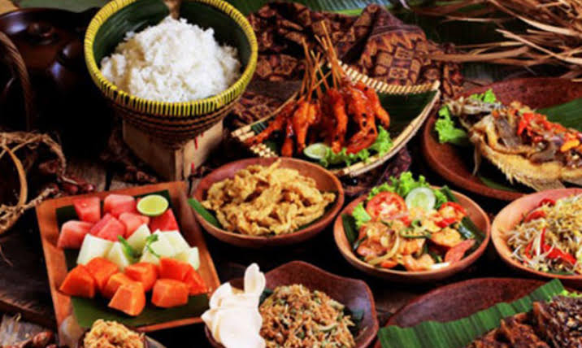
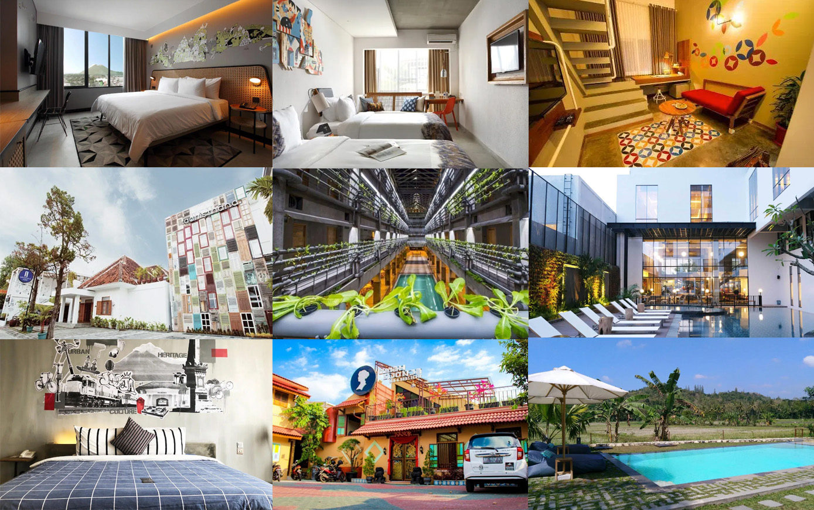
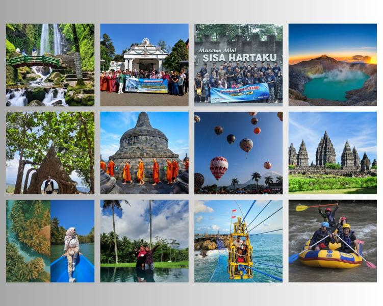
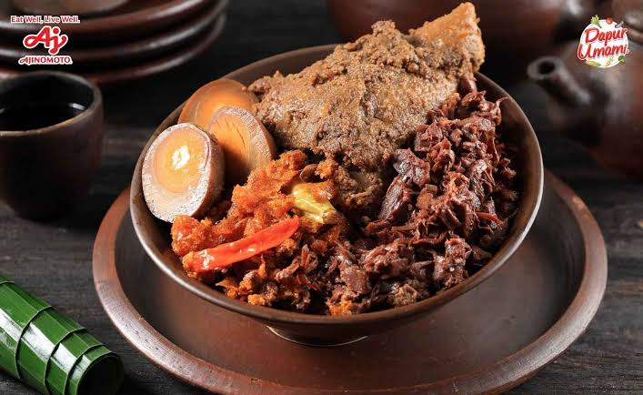
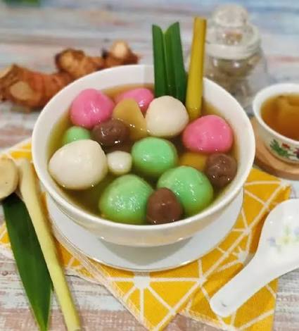

Welcome to Explore Yogyakarta
Discover a variety of culinary offerings, accommodations, and interesting tourist attractions in Yogyakarta.

Yogyakarta Culinary Scene
Discover a variety of delicious, fresh, and satisfying culinary specialties from Jogja.

Yogyakarta Accommodation
Discover a variety of clean, comfortable, and safe accommodations in Jogja.

Yogyakarta Tourism
Discover a variety of beautiful, lush, and visually delightful tourist attractions in Jogja.
Culinary
Jogja offers a variety of dishes, snacks, and drinks characteristic of the region. Jogja possesses a distinct flavor rooted in the local culture.

Gudeg
Gudeg is a signature dish from Yogyakarta that you must try. It is made from young jackfruit, slow-cooked with coconut milk, palm sugar, and a blend of spices.

Wedang Ronde
Wedang ronde is a traditional drink from Jogja consisting of chewy glutinous rice balls filled with peanuts, served in a warm ginger broth.

Bakpia Pathok
Bakpia Pathok is a small, round pastry typical of Yogyakarta that originated from an acculturation of Chinese and Javanese cultures.